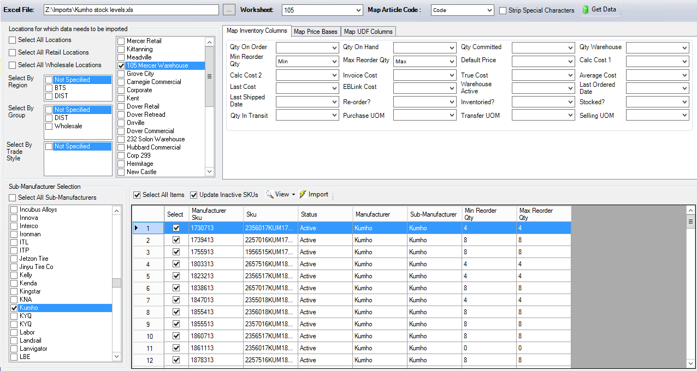
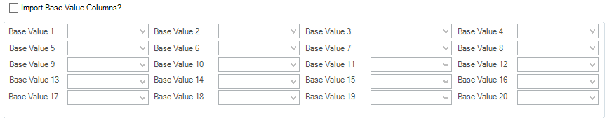
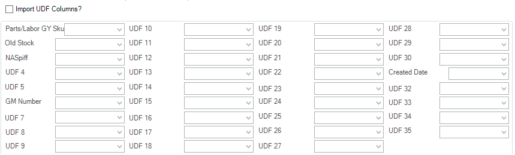

Import Inventory Items
Import Inventory Items gives users the ability to update data in inventory management site detail fields, base value fields, and user defined fields.
select Import Inventory Updates

Formatting source document is important to a successful import. Listed below are a few things to verify prior to importing.
- Name tabs in creating multiples
- Assign column header names
- Remove a formatting and/or data that is not needed for import
- Format
Import Selection
- Select ellipsis and browse to desired Excel file. Must be in .xls format (Excel 97-2003)
- Select desired worksheet (spreadsheet tabs)
- Select Map Article Code (column headers)
- Verify need to strip special characters (defaults to checked)
- Select data will populate in data window
Data Selection
- Select desired location information
- Select desired sub manufacturers
- Select desired tab
- Map Inventory Columns Tab – Site Detail Information (See above screenshot)
- Map Price Bases – Base Value Fields

-
- Map UDF Columns – User Defined Fields

- Select from drop downs the appropriate columns for desired data population
 Note: Cannot use columns from data source more than once
Note: Cannot use columns from data source more than once
- Verify need for Select All Items to be checked (defaults to checked)
- Verify need to Update Inactive SKU’s (defaults to checked)
- Verify information in data field is correct
- Items in source document that are not in inventory management will appear in red
- Select dialog box will appear to verify the action selection and to alert that action cannot be cancelled
- Import success dialog box will display
- Select OK